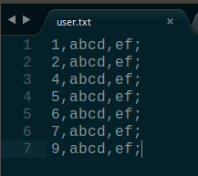
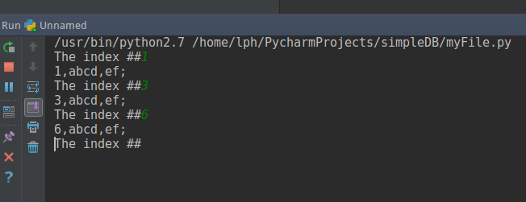

背景：最近工作中总是接触到HBase，也不会用，并且这是个啥东西也不是很清楚，只知道这是个数据库，和平常的关系型数据库不一样，这个数据库更厉害，能做到平常关系型数据库做不到的…，网上搜了一大摞，大概知道HBase是列式存储，关系型数据库是行式存储，但也是一知半解，想彻底了解平常使用的关系型数据的年头越来越强烈，所以就有了自己动手实现一个实现数据库最基本的一些功能的想法。
(PS:一两个月前，公司组织了一些新人去参加由Apache HBase举行的Apache HBaseCon Asia 2017大会,全程都不知道他们在说啥东西…)
这篇博客主要记录了一个简单数据库的实现(Python实现)，使用python提供的文件操作api。
实现了数据库最基本的核心部分，查找、索引、数据储存等。
参考博客： 廖雪峰的博客-数据库的最简单实现
第一版
实现的查找主键，直接上代码把
1 | #!/usr/bin/python |
数据是存在文本文件中，如下图：

运行如下：

好了，可以简单的运行起来的。我们再写第二版，
- 数据库以B树格式储存
- 加索引
- 为查找方法加个方法执行时间的装饰器，和第一版对比查找效率